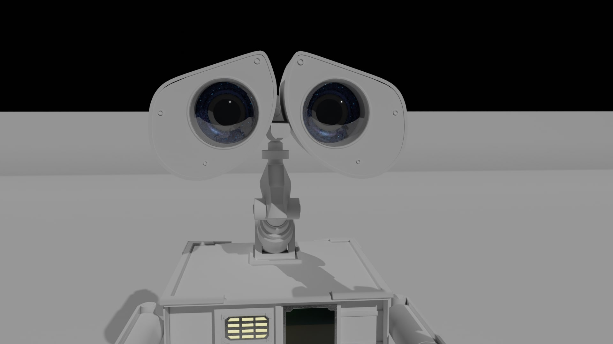
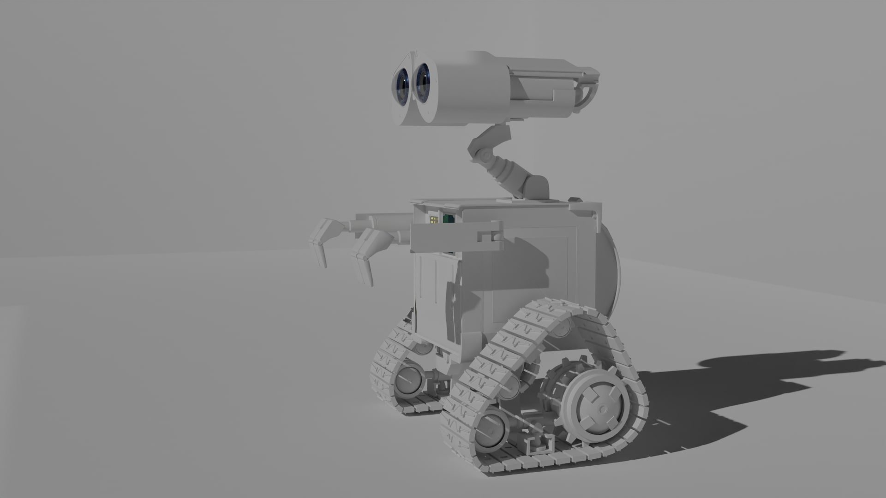
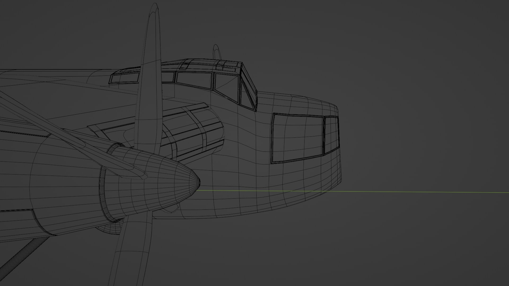
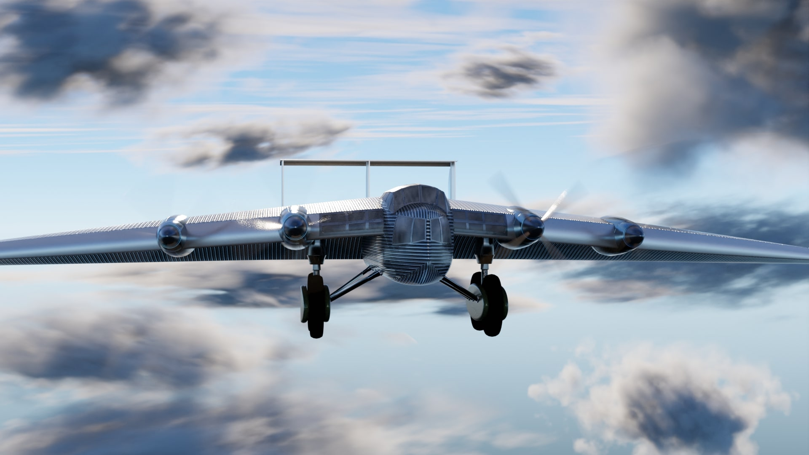
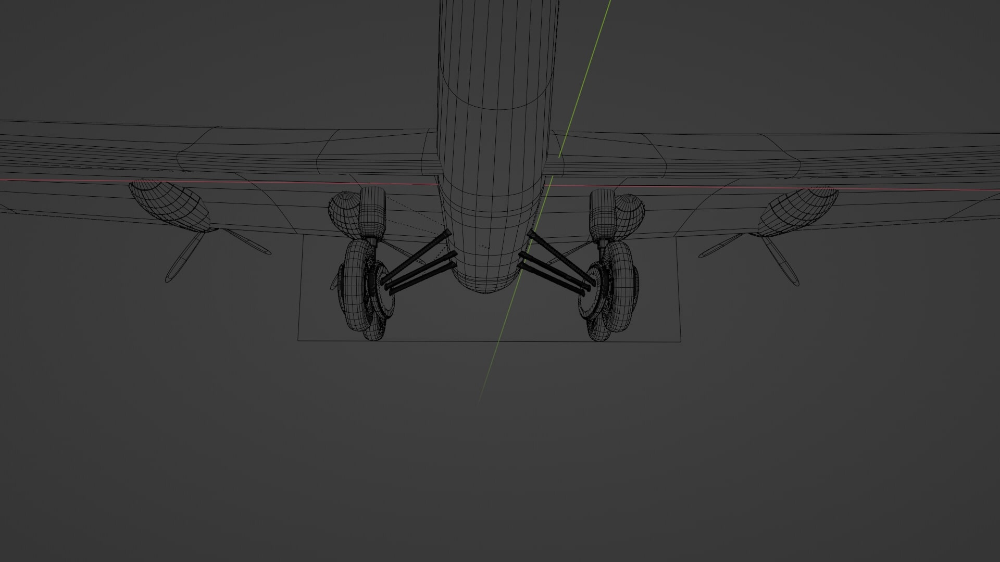
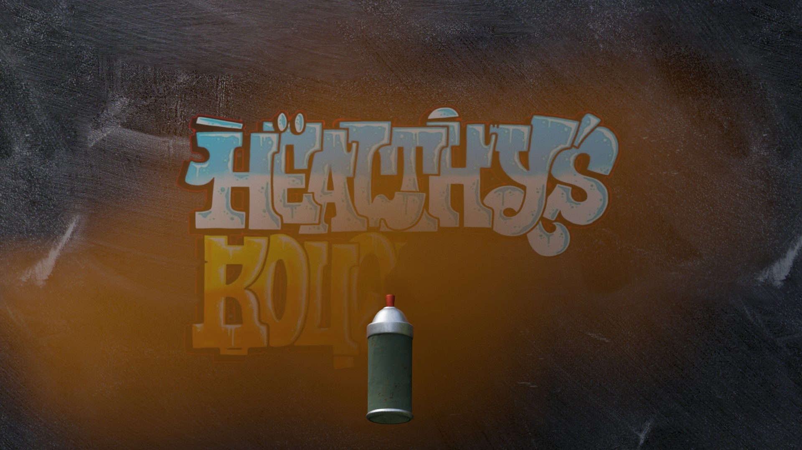
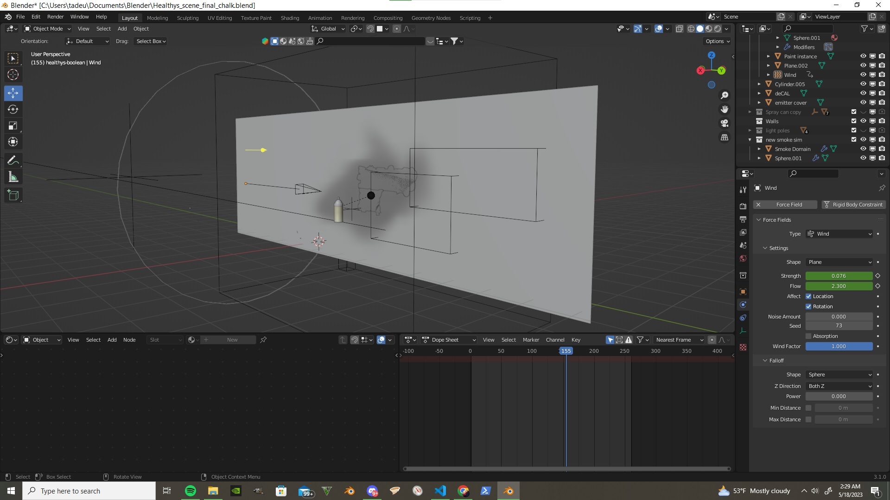
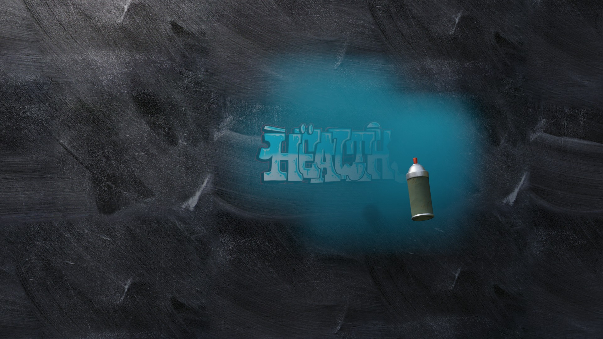

After the modeling was done,
I moved to UV wrapping, so I could adjust the multiple textures.
After texturing I had to figure out a rig for all the moving parts. The armature was easy enough,
but the most challenging part of this project was getting the tracks to work.
 Wall-e rigged model,
I started by making the large parts of WALL-E,
the body, arms, eyes, suspension and tracks.
Wall-e rigged model,
I started by making the large parts of WALL-E,
the body, arms, eyes, suspension and tracks.

I used constraints to lock the rotation to the X axis and transfer any
Y movement data to the X axis so the tracks rotated accurately.
Before using constrainsts moving
Walle would caused my track assembly to break and distort

The corrugated metal was hard to align properly on
all the separate panels, so this was a good challenge
to overcome.

On this project I modeled a Junkers G38 for an animation.
I only rigged the ailerons, elevator, and rudder
so it was a simple rig overall but I learned a lot
about uv wrapping and texturing during this project.

The procedural texture is based off a
wave texture, to create stripes and I used a
displacement node to lower the edges of the stripes
and raise the center face area to give a ridged metal
effect.

I assigned a boolean function to a cube so that it would "eat"
another mesh when that assigned mesh was passed through the
cube. I assigned the logo to be the target then placed the
cube over it and animated the cube slowly moving down the X
axis. With this I achieved an effect of text being slowly
sprayed on a wall.

Graffiti logo.
For this project my client wanted his logo to be
spray painted on a wall. The paint can had to create a
smoke effect that could be blown away by the wind at the
end of the spraying, revealing the logo beneath. This propject
had many different simulation effects and was another
valuable learning experience for me.

After this I modeled a paint can and
attached a smoke simulation to the nozzle to achieve my smoke
fx. Adding a force field to move the smoke was the final step